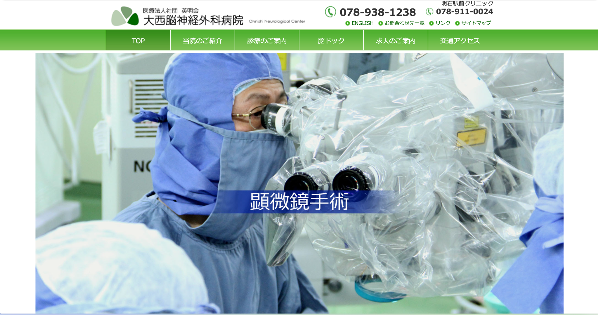

概要・スキル
Webディレクターとして企画から制作・運用までを一貫して担当。UXリサーチで現状の課題を抽出し、情報設計やユーザーインタビューを基に構成案を作成。公開後はGA4やヒートマップ解析ツールでデータを分析し、改善を続ける。
プロジェクト事例
大西脳神経外科病院
| 目的 | 診療科ごとの情報整理と採用応募の増加 |
|---|---|
| 担当 | 構成・進行 |
| 主な施策 | UXリサーチ・情報設計・ワークショップ・要件整理 |
| 効果 | 検査予約フォームCTR 20%向上、採用応募者数150%増 |
芳珠記念病院

| 目的 | 外来の診療案内のわかりやすさ向上と求人応募強化 |
|---|---|
| 担当 | 構成・進行 |
| 主な施策 | UXリサーチ・キーワード選定・情報設計・ワイヤーフレーム作成 |
| 効果 | 検索経由の外来案内ページ閲覧数180%増加、求人応募者数120%増 |
ギフト専門ECサイト

| 目的 | 顧客体験向上によるCVR改善 |
|---|---|
| 担当 | 構成・進行・デザイン監修 |
| 主な施策 | ユーザーペルソナ策定・カスタマージャーニーマップ作成・UIデザイン刷新 |
| 効果 | 平均購入単価120%向上、CVR2.5%→4.5% |